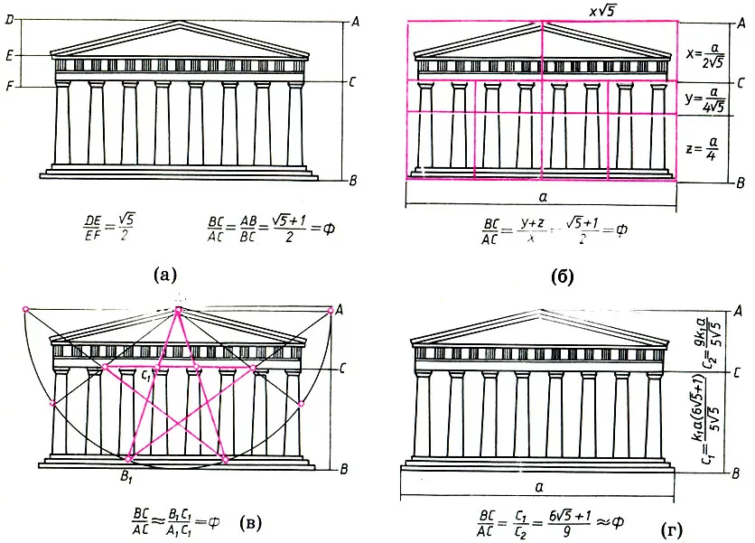

Что такое инженерные методы?
Инженерные методы позволяют рассчитать нагрузку на здания, прочность материалов и устойчивость конструкций. Архитекторы используют математику и физику для создания безопасных и долговечных сооружений.
Механика строительных конструкций
Определение баланса сил, устойчивости зданий и сопротивления материалов.
Расчёт нагрузок
Здания подвергаются различным нагрузкам:
- 📌 Статическая нагрузка (вес конструкции, стены, крыша)
- 📌 Динамическая нагрузка (ветер, землетрясения)
Рассчитайте нагрузку на перекрытия:
Прочность материалов
Прочность материалов играет ключевую роль в архитектуре. Например, бетон выдерживает до 50 МПа, а сталь – до 250 МПа.